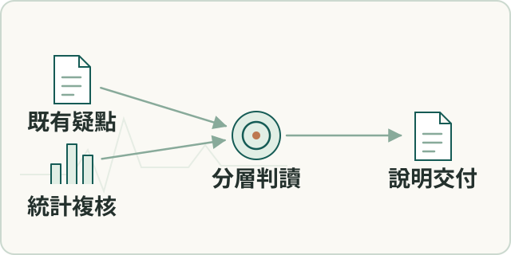

場域分析
設備電流資料複核與說明
針對既有分析疑點重查統計與判讀口徑，整理客戶說明版本。
- 我的角色
- 本人把客戶三項觀察轉成可檢定問題，以分鐘中位數、非參數檢定及效應量複核，整理分析與說明。

工作流程示意（點圖放大）要解決的問題
客戶對負載及穩態振動提出疑問，需重建統計口徑並區分關聯及根因。
輸入、處理與產出
- 輸入
- 客戶觀察、既有報告與補齊後的設備量測資料。
- 處理方式
- 對齊資料覆蓋與事件口徑，再依工況以分鐘中位數、非參數檢定及效果量比較。
- 產出
- 交付統計分析、客戶說明與待現場補驗的假說。
適用範圍
統計關聯不能直接確診根因，仍需轉速、流量等工況資訊。
核心問題與我的做法
接住客戶質疑，把觀察轉成可檢定問題
客戶讀過振動報告後，對負載、方向及穩態振動提出觀察，原本的總體描述不足以回答。
依工況重新分層，分開統計關聯與尚未確認的設備根因。 本人以分鐘中位數降低秒級自相關，配合多重比較及效果量，重新檢驗三項觀察並整理客戶說明。
完成並交付深入分析與客戶說明，將統計關聯、可支持的解讀及需要現場補驗的假說分開。
先補資料缺口，再重算事件口徑
日曆上的資料空白可能把仍在運轉的設備錯判為停止，進而改變事件切分與統計。
分析紀錄將兩條資料鏈分開核對，補齊缺口、比對重疊時戳後重新切分事件；我主導的分析口徑與客戶說明再依更新資料修訂。
補齊資料後重新切分事件並更新下游引用，讓報告結論對應一致的資料基準；節點中斷根因仍另案追查。
成果與驗證
已交付分析及客戶說明簡報，將統計差異與根因假說分開，列出需現場補驗的資訊。
Kruskal–Wallis · Mann–Whitney · Cliff’s delta